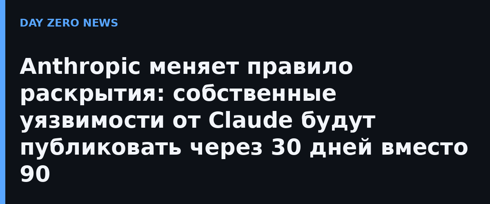

Anthropic объявила об обновлении своей политики координированного раскрытия уязвимостей (CVD). Окно приватности для проблем высокого и критического уровня сокращается с 90 до 30 дней, для всех остальных — до 45 дней. Новые сроки применяются к уязвимостям, о которых вендорам и мейнтейнерам сообщат с 1 января 2027 года; уже идущие отчёты сохраняют прежние дедлайны. Плюс два сопутствующих изменения: эскалация внешнему координатору теперь через 15 дней молчания мейнтейнера вместо 30, а полные технические детали после выхода патча публикуются через 30 дней вместо 45. Семидневное окно для уязвимостей, которые уже активно эксплуатируются, остаётся прежним.
Компания прямо объясняет причину: нормы CVD писались в эпоху, когда фиксы двигались со скоростью человека, а случайное независимое переоткрытие того же бага было редкостью. Обе предпосылки больше не работают — модели теперь и находят уязвимости роево, и помогают писать исправления. «90-дневное окно имело смысл, когда можно было ожидать, что уязвимость останется приватной месяцами. Мы больше так не считаем», — говорится в анонсе. Anthropic также уведомляет мейнтейнеров проектов, чьи критические дыры уже пережили старый 90-дневный срок: им дают дополнительные 30 дней, после чего отчёты выйдут на открытый дашборд.
Это первый случай, когда крупная лаборатория ИИ официально привязала темп раскрытия уязвимостей к скорости машинного поиска. Логика защитников простая: если один модельный прогон может переоткрыть баг, долгое эмбаро перестаёт защищать пользователей и начинает скорее защищать атакующих, у которых тоже есть модели. Давление на мейнтейнеров Anthropic признаёт и обещает компенсировать: к каждому отчёту прилагается готовый патч или митигация, а поток находок согласуется по объёму. Для открытых проектов есть бесплатный сканер OSS Scanner и бесплатные шесть месяцев Claude Ultra по программе Claude for Open Source.
Решение укладывается в тренд, который месяц за месяцем подтверждают и другие отчёты: всплеск CVE, связанный с ИИ-поиском, рекордные очереди неопубликованных находок и споры о том, что 90-дневный стандарт Project Zero больше не является серединой поля. Если лаборатория подтвердит новый ритм на практике, за ней потянутся другие — ицелый календарь индустрии безопасности сожмётся до месяцев и недель.
Практический вывод для разработчиков: время между «дыру нашли» и «о ней узнал мир» сокращается втрое. Авторегрессия, зависимости с известными-уязвимостями и быстрая доставка патчей становятся важнее красивых отчётов.